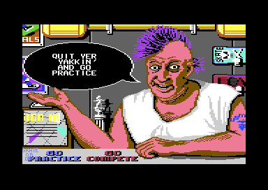

<meta charset="utf-8">
<meta name="viewport" content="width=device-width, initial-scale=1">
<title>Skate or Die!</title>
<link rel="preconnect" href="https://fonts.googleapis.com">
<link rel="stylesheet" href="https://fonts.googleapis.com/css2?family=Lato:wght@400;700;900&family=IBM+Plex+Mono:wght@400;500&display=swap">
<link rel="stylesheet" href="reference/sod-page.css">
<!-- tabs -->
<header class="hero">
  <p class="eyebrow">Commodore 64 · 1987 · Electronic Arts</p>
  <h1>Skate or Die!</h1>
  <p class="sub">Rodney's shop and the town square: where players sign in, how the skater's path chooses an event, and the code that stays in memory to load each event and keep the score.</p>
</header>
<main class="wrap" data-part="shop">
<section id="shop">
  <p class="fig">01 · The shop</p>
  <h2 class="t">Rodney's counter is the menu</h2>
  <p>After the title, the game opens in Rodney's skate shop. There is no list of options: the player moves a pointer, a sprite of the SKATE OR DIE! logo, over things in the picture, and each one does a job. The shop has 13 such spots (<code>$2113</code>): signing in (<code>$1CEC</code>), choosing a board colour (<code>$1A7E</code>), the records (<code>$1DC8</code>), practice (<code>$2067</code>) and competing (<code>$1A65</code>). Others only make Rodney talk.</p>
  <p>Rodney has 21 lines of speech (<code>$217E</code>), drawn into a balloon of six sprites. One spot picks a line at random from eight, and one line is CONGRATS followed by the name of the skater with the best scores. Sign-in takes up to eight skaters with names of up to fifteen letters, and accepting an empty name deletes a skater (<code>$1D5B</code>). Board colours run through every colour but black.</p>
  <figure class="sod-shot"><figcaption>Rodney's shop. Captured in an emulator from the copy studied here.</figcaption></figure>
</section>
<section id="square">
  <p class="fig">02 · The town square</p>
  <h2 class="t">The edge of the screen you leave by picks the event</h2>
  <p>Practice, or COMPETE ALL, puts the skater in the town square, seen from above. The stick turns the skater a step every two frames, 64 steps to a circle, and pushing it adds speed up to three. There is no friction: the skater keeps rolling with the stick centred, and only pulling back brakes. Diagonals are slower than straight lines, because each step moves sixteen units split between across and down, so a diagonal covers about 70 % of the distance.</p>
  <div class="plate">
    <canvas id="town" class="scr" style="max-width:640px"></canvas>
    <p class="cap">The town square drawn from the shop's memory: the bitmap at <code>$4000</code>, the screen colours at <code>$6000</code> and the colour map at <code>$E000</code>.</p>
  </div>
  <p>The town has no doors to the events, only edges. Its walls are compares in the code rather than a map (<code>$1793</code>, <code>$17E2</code>, <code>$1839</code>, <code>$1888</code>), and which edge the skater rolls off decides what loads: the right edge high up for the Freestyle ramp and low down for High Jump, the bottom edge on the left for the Downhill Race and anywhere else along it for the Downhill Jam, and the left edge low down for the Pool Joust. The left edge high up starts COMPETE ALL; in practice the skater just stops there. The shop door is a small box near the top.</p>
</section>
<section id="loading" data-part="resident">
  <p class="fig">03 · Loading an event</p>
  <h2 class="t">Seven rows of a table, and a disk side to check</h2>
  <p>On its first load the shop installs the event manager: it loads it to <span data-part=""><code>$C000</code></span> and copies it up under the KERNAL (<span data-part="shop"><code>$0FD2</code></span>), then marks it as present at <code>$FDFF</code>. The manager and the disk loader beneath it at <code>$F230</code> stay in memory from then on; each event loads over everything below them.</p>
  <p>The manager's load table (<code>$F8A0</code>) has a row for each place it can send the skater: the shop, the five events and the side check. Each row gives the file, the load address, the entry point, the name for the SKATING TO message and the disk side. The events are spread over both sides of the disk: the ramp, High Jump and the Pool Joust on side 1, the Downhill Race and the Jam on side 2. Before loading, the manager reads three bytes from track 18 (<code>$FA69</code>) and compares them with the side it wants; side 1 holds <code>01 01 01</code>, side 2 <code>02 02 02</code>. A mismatch shows INSERT SIDE 2 AND PRESS BUTTON.</p>
  <div class="plate">
    <div class="tablewrap"><table class="t" id="loadtab"><tr><th>Row</th><th>File</th><th>Load</th><th>Entry</th><th>Side</th></tr></table></div>
    <p class="cap">The load table at <code>$F8A0</code>, read from the bytes: eight columns of seven bytes (load address, entry point, file, event name and disk side), the low and high halves of each address in separate columns.</p>
  </div>
  <p>Every file is found by number, not by name: the disk has no directory for them. The loader looks the number up in a table of 49 entries (<code>$F2F9</code>), each a start track, a start sector and a length, and the drive's own server reads the sectors, eleven apart on most tracks so the next is under the head when the C64 is ready for it.</p>
</section>
<section id="results" data-part="resident">
  <p class="fig">04 · Results</p>
  <h2 class="t">Every event reports to the same place</h2>
  <p>An event never returns to the town directly. It writes its result into a small block of memory at <code>$FE00</code> and jumps to the manager's <code>$FE06</code>. In practice the manager asks PRACTICE AGAIN? and, on YES, re-enters the event without touching the disk (<code>$FE13</code>). In a competition it records the result, calls the next skater, and when everyone has had a turn it sorts the scores (<code>$F743</code>) and gives 5, 3 and 1 points to the first three (<code>$F7E0</code>).</p>
  <p>Back in the shop, the event's top three are merged into the high-score table (<span data-part="shop"><code>$0ACA</code></span>): twelve records of a name, a score and a colour, where a tie leaves the old holder in place. The table is written back to the disk (<span data-part="shop"><code>$0BB4</code></span>), the only time the game saves anything.</p>
</section>
</main>
<script src="../../lib/c64.js"></script>
<script src="reference/sod-page.js"></script>
<script>
(async function () {
  try {
    const S = await SOD.load('shop');
    SOD.mcBitmap(document.getElementById('town'), S.ram, { bitmap: 0x4000, screen: 0x6000, colour: 0xE000, bg: 0, s: 2 });
    // eight columns of seven rows: load lo, load hi, entry lo, entry hi, file, name lo, name hi, side ($F8A0)
    const R = await SOD.load('resident'), M = R.ram, t = document.getElementById('loadtab');
    const names = ['Shop', 'Freestyle', 'High Jump', 'Race', 'Jam', 'Pool Joust', 'Side check'];
    const h = (v, n) => '$' + v.toString(16).toUpperCase().padStart(n, '0');
    for (let r = 0; r < 7; r++) {
      const c = k => M[0xF8A0 + 7 * k + r];
      t.insertAdjacentHTML('beforeend', `<tr><td>${names[r]}</td><td>${h(c(4), 2)}</td><td>${h(c(0) | c(1) << 8, 4)}</td><td>${h(c(2) | c(3) << 8, 4)}</td><td>${c(7) || '-'}</td></tr>`);
    }
  } catch (e) { SOD.fail(e); }
})();
</script>
